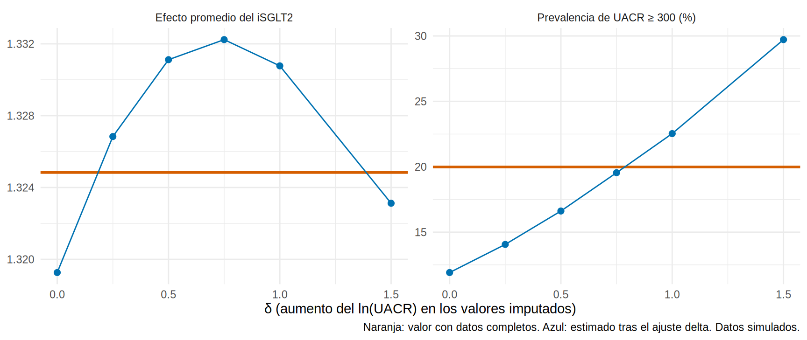

La imputación múltiple supone MAR: que, dado lo que observamos, los datos que faltan no difieren sistemáticamente de los que tenemos. Pero si faltan más en los pacientes con UACR alta (MNAR), los valores imputados serán demasiado bajos. Nadie puede comprobar ese supuesto con los datos observados, así que se hace un análisis de sensibilidad: ¿qué tanto cambiaría la conclusión si los faltantes fueran distintos de lo que supone MAR?
La técnica más utilizada es el ajuste delta (δ-adjustment, patrón de mezcla): después de imputar bajo MAR, se suma un valor δ a los datos imputados (p. ej., “los pacientes que no tienen UACR tienen, en promedio, un ln(UACR) δ unidades mayor que el que supone MAR”), y se repite el análisis con varios δ.
Un escenario MNAR
Generamos una base en la que la falta de UACR depende de su propio valor (los de UACR alta faltan más):
Entre los pacientes que sí tienen UACR, el ln(UACR) medio es 4.49; en la población real es 4.79: los que faltan tienen UACR más alta.
Imputar bajo MAR y ver lo que pasa
imp<-mice(datos, m =20, maxit =10, method ="pmm", printFlag =FALSE, seed =1)imputados_mar<-mean(sapply(1:20, \(i)mean(complete(imp, i)$luacr[falta])))c(`ln(UACR) imputado (MAR)` =imputados_mar, `ln(UACR) verdadero en los faltantes` =mean(oraculo$luacr[falta]))|>round(2)
ln(UACR) imputado (MAR) ln(UACR) verdadero en los faltantes
4.64 5.41
Bajo MAR, el imputador asigna a los faltantes un ln(UACR) medio de 4.64, mientras que su valor real es 5.41. Está subestimando a los pacientes con albuminuria alta.
Ajuste delta
Para cada δ, sumamos δ a los valores imputados y calculamos dos cosas:
Prevalencia de albuminuria severa (UACR ≥ 300): cantidad muy sensible a MNAR.
Efecto promedio del iSGLT2 (con fórmula g y el modelo con interacciones): cantidad que depende de cómo se distribuye la albuminuria.
f_out<-pendiente_tfg~isglt2*(I(edad/10)+sexo+hba1c+pas+tfg_basal+luacr+ecv)ate<-function(dd){m<-lm(f_out, data =dd)mean(predict(m, mutate(dd, isglt2 =1))-predict(m, mutate(dd, isglt2 =0)))}deltas<-c(0, 0.25, 0.5, 0.75, 1, 1.5)sens<-map_dfr(deltas, \(delta){res<-map_dfr(1:20, \(i){di<-complete(imp, i); di$luacr[falta]<-di$luacr[falta]+deltatibble(prev_A3 =mean(exp(di$luacr)>=300)*100, ate =ate(di))})tibble(delta =delta, prevalencia_A3 =mean(res$prev_A3), ATE =mean(res$ate))})referencia<-tibble(prevalencia_A3 =mean(oraculo$uacr>=300)*100, ATE =ate(oraculo))sens|>mutate(across(where(is.numeric), \(x)round(x, 2)))
# A tibble: 1 × 2
prevalencia_A3 ATE
<dbl> <dbl>
1 20.0 1.32
sens|>pivot_longer(-delta, names_to ="cantidad", values_to ="valor")|>mutate(cantidad =recode(cantidad, prevalencia_A3 ="Prevalencia de UACR ≥ 300 (%)", ATE ="Efecto promedio del iSGLT2"))|>ggplot(aes(delta, valor))+geom_hline(data =tibble(cantidad =c("Prevalencia de UACR ≥ 300 (%)", "Efecto promedio del iSGLT2"), valor =c(referencia$prevalencia_A3, referencia$ATE)),aes(yintercept =valor), color ="#D55E00", linewidth =1)+geom_line(color ="#0072B2")+geom_point(color ="#0072B2", size =2)+facet_wrap(~cantidad, scales ="free_y")+labs(x ="δ (aumento del ln(UACR) en los valores imputados)", y =NULL, caption ="Naranja: valor con datos completos. Azul: estimado tras el ajuste delta. Datos simulados.")+theme_minimal(base_size =11)

Dos cantidades, dos conclusiones muy distintas:
Prevalencia de UACR ≥ 300: depende mucho de δ. Bajo MAR (δ = 0) la subestimamos (≈ 12 % vs. 20 % verdadero); con δ ≈ 0.75 coincide con la verdad. Hay que recoger la UACR en esos pacientes o aceptar una incertidumbre grande.
Efecto promedio del iSGLT2: casi no cambia con δ (1.32-1.33 para todos): la conclusión es robusta al supuesto sobre los datos faltantes. El ajuste por UACR en el modelo depende poco de los valores exactos de los pacientes sin dato.
Importante🎯 La sensibilidad depende del estimando
Un mismo supuesto de MNAR puede ser crítico para un resultado (prevalencia) y casi irrelevante para otro (efecto del tratamiento). Por eso se analiza cada resultado principal, no la base en general.
Punto de inflexión (tipping point)
El punto de inflexión es el valor de δ a partir del cual la conclusión cambia (por ejemplo, el IC deja de excluir el 0, o el efecto cae por debajo de un umbral clínico):
## ¿Para qué δ el efecto promedio caería por debajo de 1.0 (umbral clínico)?## Aquí el efecto no cae por debajo de ~1.3 en ningún δ plausible: no hay punto de inflexión.sens|>filter(ATE<1.0)
# A tibble: 0 × 3
# ℹ 3 variables: delta <dbl>, prevalencia_A3 <dbl>, ATE <dbl>
No hay δ para el que el efecto baje de 1.0: la conclusión no depende del mecanismo. Si el efecto sí dependiera, se reporta “la conclusión se invierte si los pacientes sin dato tuvieran un ln(UACR) δ = … mayor que el supuesto”, y se discute si ese δ es clínicamente plausible.
Otras estrategias para MNAR
Estrategia
Idea
Cuándo
Modelos de selección / de mezcla de patrones
Modelar explícitamente cómo la falta depende del valor
Con supuestos externos justificables
Imputación con δ por brazo
Un δ distinto para tratados y controles
Si el mecanismo difiere entre grupos
Cotas de peor caso (bounds)
Imputar los faltantes con los valores extremos
Cuando se quiere una garantía conservadora (suele dar intervalos muy amplios)
Seguimiento de una submuestra
Medir a una muestra de los faltantes para estimar la diferencia
Mejor solución; costosa
Variables auxiliares
Un proxy del valor que falta (otra medición del paciente)
Convierte parte de MNAR en MAR
Qué reportar
Tip💡 Checklist de datos faltantes en el artículo
Importante🎯 En resumen
La imputación múltiple supone MAR; MNAR no se verifica con los datos observados.
El ajuste delta suma δ a los valores imputados y repite el análisis: muestra cuánto cambia el resultado; el punto de inflexión es el δ donde la conclusión cambia.
La sensibilidad depende del estimando: la prevalencia de albuminuria severa cambia mucho; el efecto del iSGLT2, poco.
Reporta casos completos, IM y sensibilidad juntos.
Ejercicio
Calcula el δ con el que el ln(UACR) imputado coincide con el real (≈ 0.77) y verifica que la prevalencia de UACR ≥ 300 se acerca al 20 %.
Repite el ajuste delta solo en el brazo tratado (δ distinto por brazo). ¿Cambia el efecto promedio?
Piensa en una variable de tu práctica cuya falta pueda ser MNAR y propón un rango razonable de δ.
Nota editorial
Capítulo redactado con asistencia de IA y revisado por el autor. Los datos son simulados; los mecanismos de falta fueron impuestos para ilustrar.